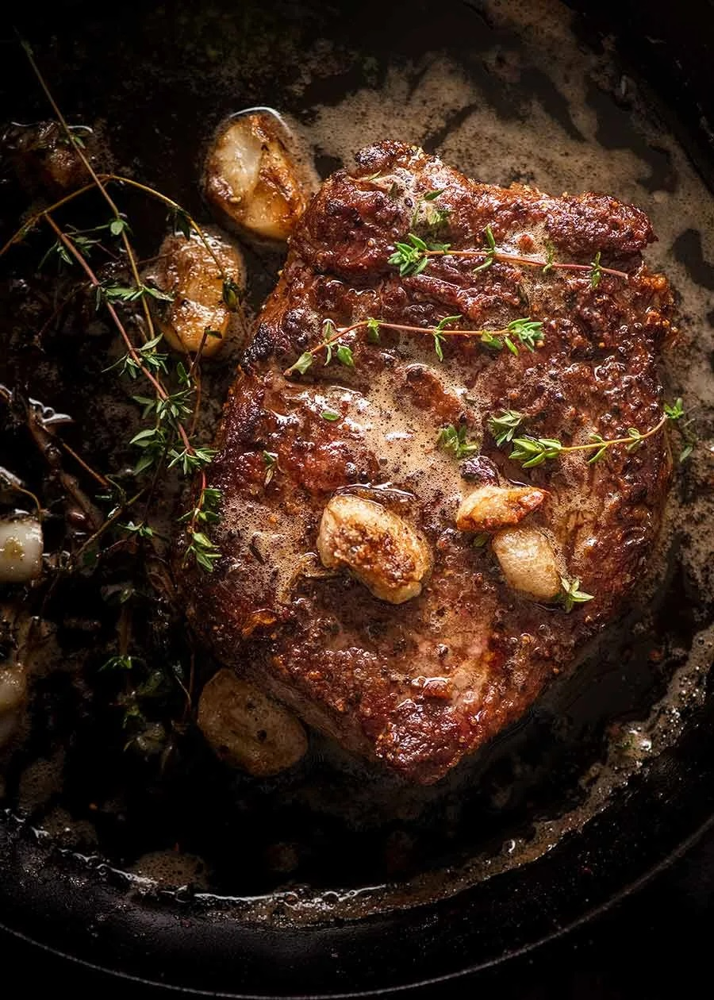

How to Cook the perfect steak

What you need
- Thickish cut steak
- Butter
- Garlic
- Thyme
Steak cooking tips
- Bring to room temp! This makes an amazing difference to cooking through evenly rather than ending up with a thick overcooked band in order for the very centre to be cooked to your liking;
- Pat dry and season the steak generously with salt and pepper, this helps form that amazing crust we all know and love about great steaks;
- Get your skillet SMOKING HOT before putting the steak in, again, for the crust
- WARNING: The butter will sputter when you add the thyme, so stand back!
- Take the steak off the stove BEFORE your desired internal temperature because the intgoernal temperature will continue to rise as it rests; and
- REST your steak for 5 to 10 minutes so it sucks its own juices back in and the fibres relax. This is a must-do step for any protein you cook hard and fast!